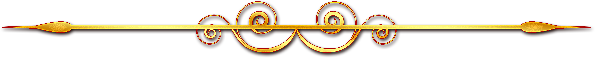

La leyenda
Hace dos años, supimos de uno de los héroes de videojuegos más grandes de todos los tiempos: un hombre que llevaba nada más que un frasco sobre su cabeza.
Hablamos por primera vez con LMSH en abril de 2022 y nos reunimos con él nuevamente por correo electrónico luego del anuncio del DLC y sí, todavía está luchando contra Malenia todo este tiempo después.
No es todo lo que hace, pero nos dice que tiene alrededor de 1200 horas en Elden Ring en este momento, y "probablemente ya la ha derrotado entre 6000 y 7000 veces".

Primera fase de Malenia: Malenia, espada de Miquella
- La primera fase de la pelea no es tan mala aún, si olvidamos obviamente la curación.
- Le encanta lanzarse hacia adelante y hacer un combo de unos 5 golpes muy rápidos, casi imposible de esquivar a menos que seas reactivo y encadenes vueltas hacia atrás.
- El peligro real en esta fase es su ataque giratorio múltiple.

Segunda fase de Malenia: Malenia, diosa de la decadencia
- Cuando la salud de Malenia cae a 0, comienza una escena con su transformación.
- La fase siempre comienza de la misma manera: Malenia saltará y se preparará para chocar contra ti.
- Más que nunca, esta fase es una carrera de DPS.